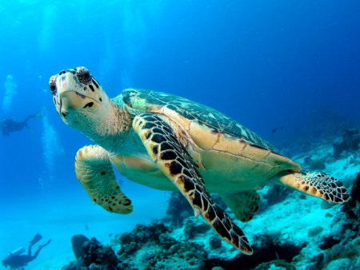
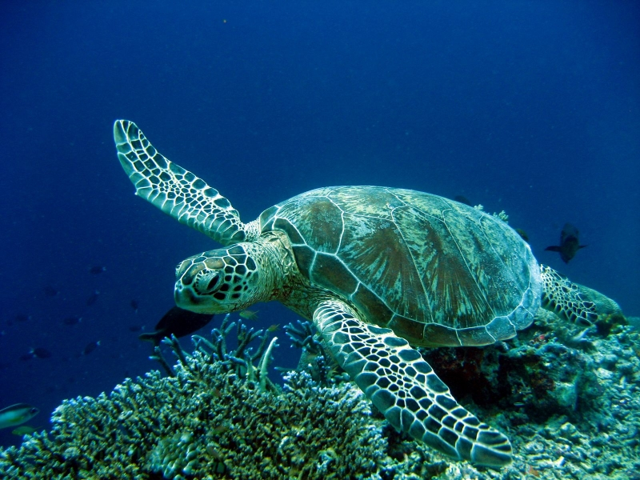
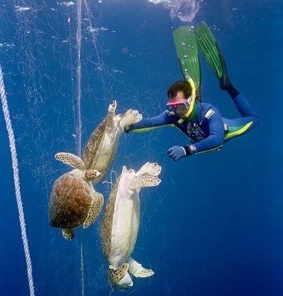
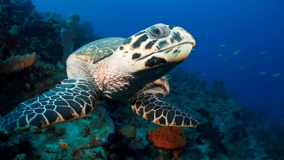

Durata de viata: Pana la 80 de ani
Unde traieste (mediu de viata): Mari si oceane
Dieta: Omnivore
Clasa: Reptile
Nume stiintific: Testudines
Ce mananca (mancarea principala): Alge, pesti, crabi, fructe, moluste
Predatori (cei care vaneaza/mananca acest animal): Oameni, aligatori, rechini, balene
De multe ori, pradatorii, precum crabi, vulpi si pasari ucid puii abia iesiti din oua, care isi croiesc drum dinspre cuib spre mare. De asemenea multi pui sunt mancati de pesti in momentul in care ajung in apele putin adanci ale marilor.Situatia devine mai alarmanta atunci cand si oamenii pun in pericol viata acestor fiinte, prin colectarea oualor, deranjarea sau chiar distrugerea plajelor unde testoasele cuibaresc.
De mai bine de 100 milioane de ani, testoasele marine cutreiera oceanele lumii, avand un rol crucial in viata ecosistemelor marine si de coasta. Cu toate acestea, in ultimii 200 de ani, activitatea umana a afectat considerabil, la nivel global, viata acestor "marinari" stravechi. Acum, mai mult decat niciodata avem nevoie de actiuni la nivel global pentru a le asigura viitorul.
Toate cele sapte specii de testoase marine se afla pe lista principala a Convetiei privind Comertul International cu Specii pe Cale de Disparitie (CITES). Trei dintre acestea sunt listate ca fiind "amenintate in mod critic" de Uniunea Internatioanala pentru Conservarea Naturii (IUCN), iar alte trei sunt considerate ca fiind "amenintate".
Majoritatea speciilor de testoase marine isi petrec aproape toata viata in apele putin adanci din apropierea continentelor. Masculii nu parasesc domeniul marin, in timp ce femelele vin la tarm pentru a-si depune ouale. In timpul sezonului de cuibarire, masculii si femelele migreaza catre locurile de hranire si se imperecheaza langa plajele unde femela va depune ulterior ouale.
Odata ce puii parasesc cuibul si ajung in apa, incepe o adevarata frenezie a inotatului in largul marilor, acolo unde curentii marini se intalnesc si unde micile testoase pot gasi hrana si adapost fata de pradatori. Numai atunci cand puii devin adulti, acestia se intorc pe plajele de unde au plecat, pentru a depune la randul lor oua.Timpul lung pentru a atinge maturitatea, precum si multele pericole naturale la care sunt expusi puii de testoasa, reprezinta cauzele pentru care doar una din 1000 de oua vor ajunge sa devina testoase adulte.
Dezvoltarea economica necontrolata a condus in mod direct la distrugerea unor plaje extrem de importante pentru cuibarire. Luminile de pe sosele si cladiri care atrag puii de testoasa si ii dezorienteaza din drumul lor catre mare. Traficul de autovehicule de pe plaje condenseaza nisipul, ceea ce face ca saparea de cuiburi sa fie practic imposibila.
In mod paradoxal, infrastructurarea de protectie impotrva eroziunii din apropierea plajelor modifica structura coastelor si poate provoca eroziuni puternice si distrugerea unor portiuni intregi de plaja.Planurile de reconstruire ale plajelor care au ca obiectiv protejarea caselor de pe tarm continua sa distruga importante locuri de hranire cu cuibarire pentru broastele testoase.
Recifurile de corali si algele de pe fundul marilor, importante habitate de hranire pentru testoasele marine, sunt distruse in mod constant ca urmare a dezvoltarii iratioanle a turismului, tehnicilor invazive de pescuit si schimbarilor climatice.
Vanatoarea acestei specii si colectarea oualor pentru consum reprezinta cauzele cele mai importante care au dus la declinul populatiilor de testoase marine la nivel mondial. Testoasele verzi sunt vanate pentru carnea lor, oua si grasime, acestea fiind ingredientul principal in supa de testoasa. Cercetatorii estimeaza ca in fiecare an, braconierii prind 30.000 de testoase verzi in golful California, in timp ce mai mult de 50.000 de exemplare sunt ucise in sud-estul Asiei si Pacificului de Sud. Testoasele au fost vanate pentru ouale si pielea lor folosita in industria pielariei. In anii '60, peste un milion de testoase Olive Ridley au fost ucise anual pe coasta mexicana a Pacificului. In multe tari, testoasele tinere sunt prinse, impaiate si vandute apoi ca suveniruri si curiozitati pentru turisti. Ouale de testoasa reprezinta un afrodiziac mult apreciat in unele tari si mancate in stare cruda sau sunt preparate si vandute in baruri si restaurante.
Comertul international cu piei si carapace provenite de la testoase a crescut ingrijorator numarul capturilor de testoase marine. In ultimile decenii, Japonia a devenit principalul importator de carapace de testoasa din tarile tropicale, cu scopul de a produce materiale artizanele. In ciuda interzicerii acestui tip de comert in cadrul CITES, activitatea inca persista intre tarile nesemnatare. In fiecare an, zeci de mii de testoase din speciile Olive Ridley, Kemp Ridley, testoasele de mare si testoasele cu spatele acoperit de piele sunt prinse accidental o data cu pescuirea crevetilor. Testoasele marine sunt reptile, asadar, daca nu reusesc sa ajunga la suprafata sa respire, se ineaca.
De asemenea, plasele de pescuit si pescuitul cu paragat (unealta de pescuit marin, alcatuita dintr-un sir de carlige cu nada fixate pe cablu sau funie groasa) sunt principalele cauze ale mortalitatii testoaselor marine.La nivel modial, sute de mii de testoase sunt prinse anual in navoadele de mari dimensiuni si plase de pescuit.
Schimbarea climei si incalzirea globala pot afecta considerabil populatia de testoase marine. Sexul reptilelor depinde de temperatura exterioara, ceea ce inseamna ca o crestere a temperaurii poate conduce la un dezechilibru intre populatia de masculi si femele. Testoasele marine pot confunda bucatile de plastic care plutesc in mari, cu meduze si se pot ineca incercand sa le inghita. Materialele pentru pescuit lasate de izbeliste pot prinde in capcana testoasele, acestea nemaiputand sa inoate sau sa se hranesca. De asemenea, un pericol important il reprezinta gunoaiele de pe plaja care pot impiedica puii sa ajunga la ocean.O alta amenintare o reprezinta scurgerile de petrol care sunt otravitoare pentru testoase, indiferent de varsta.
Curiozitati:
- Cea mai mare si cea mai specifics dintre testoasele marine este lauta, care are carapacea canelata asemenea unui scut si este acoperita de o piele groasa si carnoasa.
- Unele exemplare au ajuns sa atinga 2 metri si ss cantareasca mai mult de 700 de kilograme, insa giganti de acest tip nu se mai intalnesc de mult timp, dovada clara ca populatia este in declin.
- Testoasa verde este cea mai vegetariana din grup ?i mesteca zgomotos plante marine si frunze ciopartite sau alta vegetatie de coasta. De asemenea este cea mai exploatata, carnea ei fiind utilizata pentru a prepara supa de testoasa si ouale ei se mananca ca delicatesa atat de catre populatia locala cat si in restaurantele din intreaga lume.
- Cele mai mici dintre testoasele marine sunt cea de golf si cea aurie. Spre deosebire de celelalte specii, acestea se reunesc pentru a depune ouale; in unele ocazii se grupeaza cate 150.000 de femele de testoase pe golf.
- Exista o zi mondiala dedicata broastelor testoase. Inca din anul 2000, American Tortoise Rescue au denumit pentru prima data ziua de 23 mai drept ziua testoaselor. 
- Carapacea unei testoase este formata din 60 de oase diferite unite intre ele.
- Mai multe specii de testoase pot trai peste 100 de ani. Un caz concret de longevitate implica o testoasa care, in momentul capturarii, s-a estimat ca avea 50 de ani si care a mai trait, ulterior, 152 de ani in captivitate.
- Majoritatea testoaselor nu suporta frigul, dar totusi, testoasa Blanding a fost vazuta inotand sub gheata in zona Marilor Lacuri.
- Broasca testoasa are o rezistenta formidabila la foame, ea poate supravietui pana la 400 de zile fara hrana.
- Creierul broastei testoase este mic si nu foarte evoluat. In schimb, simturile ai sunt foarte dezvoltate, mai ales vazul si mirosul.